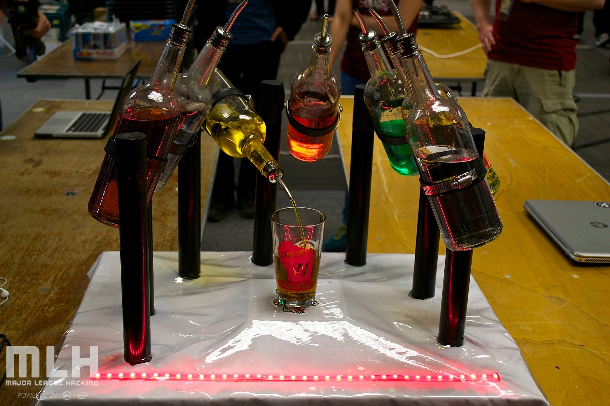
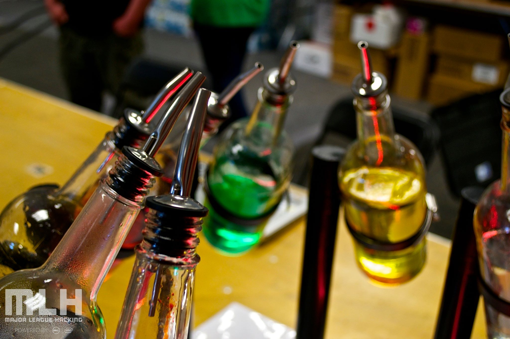

During Madison's first ever Hackathon, I worked with my good friends Nick Thoma and Zach VanderVelden to make a robotic bartender. We decided on the idea before the hackathon and started ordering some of the hardware. We decided to use an Arduino to power seven different servo motors. Depending on the serial data that we sent the Arduino, it would turn the correct bottle. The cup sits on top of the scale, so that we are able to keep track of how much liquid has been poured into the cup. We had a Rasberry Pi running a server, and connected it directly to the Arduino. The person ordering a drink would use our mobile app to choose their drink and desired size, and the server would parse the information and send serial data to the Arduino. The project was insanely fun to work on and we ended up being in the top three finishers for the Most Mad Hack category.
 This is an iPhone application that lets somebody record up to eight different custom recordings and play them back simultaneously. You could think of it as a personal beat box machine. I'm still working on some of the UI, but am hoping to get it into the App Store by the end of 2015.
A twitter-like website used to authenticate a user, then allow them to post help requests to a feed. A user has a profile that contains all of their requests.
A suite of tools that athletes can utilize to generate lifting programs and track progress
Used Ruby’s fitgem API to fetch and display fitbit data on a Rails website. Compared data from my parents such as daily / weekly steps.
Simple chrome plugin utilizing GTmetrix API to generate performance and suggestions about a webpage.